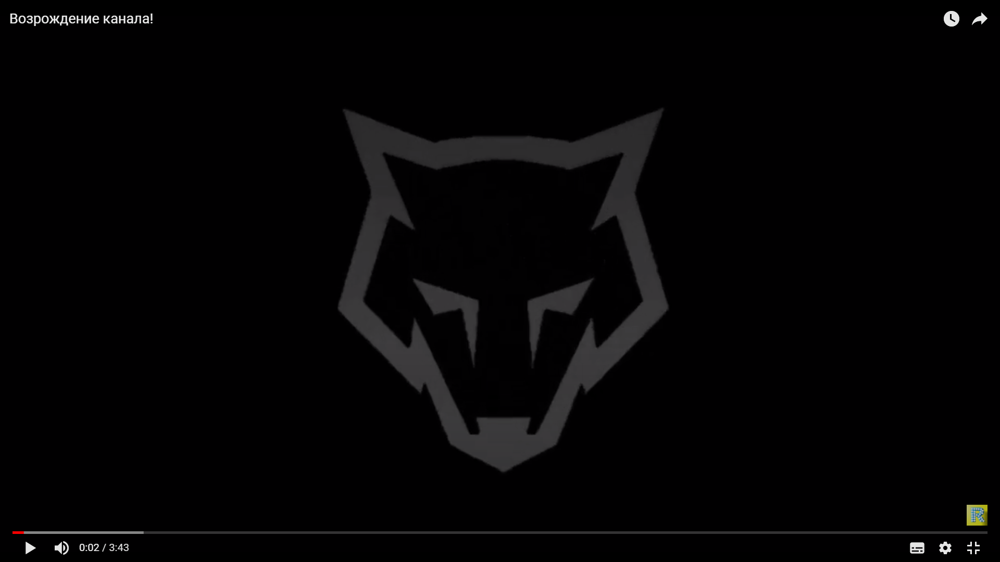

Думая над возрождением, Роман хотел что то крутое, что то особенное. То, чего на его канале раньше не было. В силу своего опыта и технических возможностей, ведущий смог лишь вставить интро, которое ему сделал его друг, еще полгода ранее и записать простенькое, даже не имеющая сценария видеообращение. И вот видео готово. Дата была выбрана вечер 28 января 2020 года. Но т.к видео получилось с изьяном, который автор исправил только утром следующего дня, на канале находится перезалитая версия "возраждающего видео" от 29 января 2020г.

Вернув канал и возродив его, опубликованным видео, Ромарио поменял оформление канала. Он изменил аватар, а так же шапку главной страницы канала. Не сказать, что это было просто пиком шедевра, но это в любом случае лучше, чем было.
Через некоторое время канал вновь поменял оформление, что смотрелось в принципи получше, чем раньше.